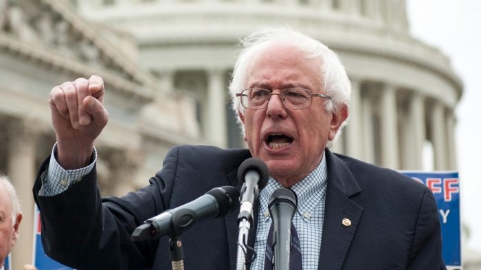
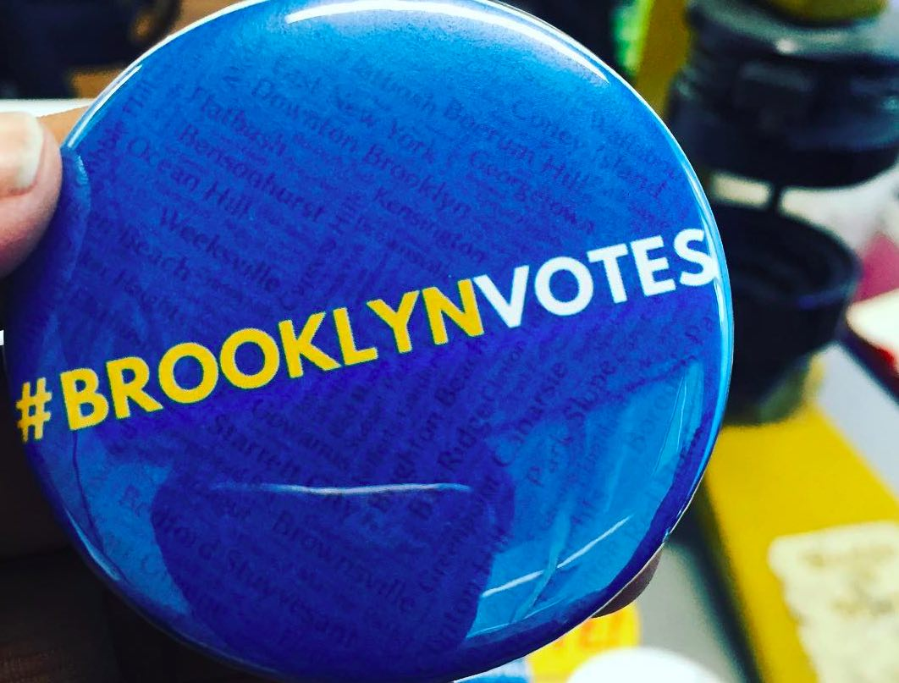
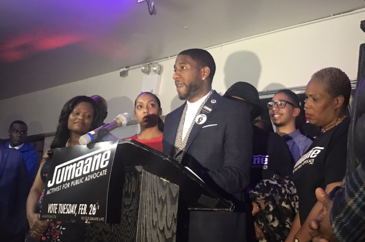

By Kadia Goba - February 24, 2019
MIDWOOD — Sen. Bernie Sanders announced Saturday evening he’ll come to Brooklyn at almost the same time the city’s mayor, Bill de Blasio, was giving a speech in Iowa. Sanders will hold his first campaign rally on Brooklyn College’s (CUNY) campus at 2900 Bedford Ave., in Midwood. The event will be held on Saturday, March 2, outside in the open air quad, behind the campus’ library at 11:30 am. Doors open at 10:00 am.

By Kadia Goba - February 25, 2019
BROOKLYN — New York City residents will cast their votes tomorrow, Tuesday, February 26, for the city’s next public advocate in a special election to fill the seat Letitia James left after she was sworn in as the New York State attorney general on Jan. 1, 2019.

By Kadia Goba - February 27, 2019
EAST FLATBUSH — City Councilman Jumane Williams dominated in Tuesday’s special election to claim the interim post as New York City’s fifth public advocate.